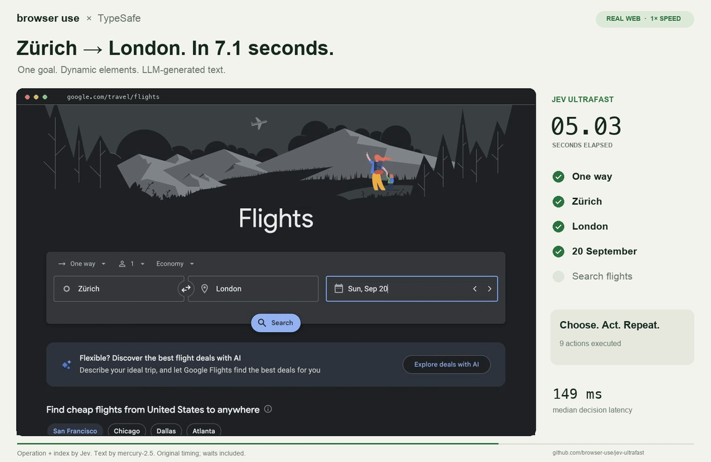

VM14K · Họp nhóm 16/10/2026
Fine-tune trên laptop và Jev cho y tế
Hai việc làm trong lúc chờ phản hồi về file 125 câu: thử fine-tune một model nhỏ có đối chứng đầy đủ, và tìm hiểu Jev (việc số 5 của buổi họp 02/10).
Tóm tắt
Bốn kết quả chính
Fine-tune tăng 9,2 điểm
Qwen3.5-2B, LoRA 1 epoch trên 7.313 câu train: 41,8% → 51,0% trên 1.658 câu test, p = 2,6×10⁻¹¹.
Xác suất đáng tin
Sai số hiệu chỉnh ECE từ 10,7% còn 1,8%: model báo 70% chắc thì đúng khoảng 70%.
Học được thiên lệch “đáp án A”
Train không đảo phương án thì model chọn A ở 44,9% câu, trong khi khoá là A ở 29,8%.
Ý tưởng của Jev đo được
Model nhỏ tự trả lời câu chắc, gửi 50% câu còn lại cho DeepSeek: 65,6%, so với 61,2% nếu chọn ngẫu nhiên.
Fine-tune · Thiết lập
LoRA một model 2B trên GPU tích hợp của laptop
| Thành phần | Lựa chọn |
|---|---|
| Model | Qwen3.5-2B [18], cùng họ với Qwen3.5-9B, model local tốt nhất của nhóm (63,0%) |
| Dữ liệu | 7.313 câu train của split cố định. 1.658 câu test không dùng để train hay chỉnh tham số |
| Huấn luyện | LoRA r = 16 [12] trên mọi lớp chiếu, 15,6 triệu tham số (0,82%), 1 epoch, batch 16, lr 2×10⁻⁴ |
| Đối chứng | Hai lần train: đảo thứ tự phương án mỗi câu, và giữ thứ tự gốc |
| Chấm điểm | Prompt Fig. 6 của paper [9]. Lấy chữ cái có xác suất cao nhất, nên không câu nào bị lỗi parse |
| Phần cứng | Intel Arc 140T (16 GB dùng chung) qua PyTorch XPU, khoảng 70 phút mỗi lần train |
Fine-tune · Kết quả
Một epoch LoRA: 41,8% → 51,0% trên tập test
Fine-tune · Cải thiện bằng cách nào
Một nửa phần tăng là sửa thói quen chọn chữ cái, nửa còn lại là học từ nội dung
Mỗi câu train: prompt của paper, mục tiêu là một chữ cái. Loss = −log P(đáp án đúng). LoRA chỉ học 15,6 triệu tham số gắn thêm, model gốc giữ nguyên.
Thang 0–60%. Xám: zero-shot. Xanh nhạt: phần sửa thói quen. Xanh đậm: phần học từ nội dung.
Kiểm chứng 1 · Có phải học vẹt?
Phần tăng không đến từ những câu test gần trùng câu train
Kiểm chứng 2 · Thiên lệch vị trí
Train không đảo phương án thì model học cách đoán “A”
| Run | Chọn A |
|---|---|
| Zero-shot | 38,0% |
| LoRA đảo phương án | 34,4% |
| LoRA thứ tự gốc | 44,9% |
| Khoá là A | 29,8% |
Kiểm chứng 3 · Câu nghi khoá sai
Học 7.313 khoá train không kéo model về phía khoá ở các câu bị nghi
| Nhóm câu test (tỉ lệ chọn giống) | Zero-shot | LoRA đảo | LoRA gốc | p (zero → đảo) |
|---|---|---|---|---|
| 1.390 câu thường, khớp khoá | 45,8 | 56,9 | 58,1 | 7×10⁻¹³ |
| 238 câu bất đồng, khớp khoá | 21,4 | 22,3 | 22,7 | 0,89 |
| 238 câu bất đồng, chọn như 2 model mạnh | 49,6 | 53,8 | 50,8 | 0,30 |
| 125 câu cả 7 model sai, khớp khoá | 17,6 | 8,8 | 9,6 | 0,035 |
Jev · Là gì
Jev nhận dữ liệu và câu hỏi, trả về quyết định kèm xác suất thay vì văn bản

Dữ liệu (state)
Văn bản hoặc JSON: tin nhắn khách, lịch sử giao dịch, chính sách hoàn tiền
Câu hỏi có kiểu, chạy song song
Noul: có yêu cầu hoàn tiền không? · Choice: chuyển bộ phận nào? · Score: mức bực bội 0–2
Jev trả về giá trị và xác suất
noul 0,95 choice "billing" score 1,4 kèm confidence
Code ra quyết định
Chắc thì tự xử lý, không chắc thì chuyển cho người hoặc model lớn
Jev · So với LLM và số liệu độc lập
Đổi khả năng viết lấy tốc độ và xác suất đáng tin
| LLM | Jev | |
|---|---|---|
| Đầu ra | Văn bản, sinh từng token | Giá trị có kiểu, một lượt |
| Xác suất | Tự rút từ logit | Trả sẵn, huấn luyện để hiệu chỉnh (RLCD) |
| Tốc độ* | 3–329 giây | 70–500 ms |
| Giải thích | Có | Không |
Đánh giá độc lập, ĐH Bonn, 37 bộ dữ liệu [5]
Jev · Ứng dụng trong AI
Trong harness, Jev lo các quyết định nhỏ, LLM lo phần viết và suy luận
Harness là phần code quanh model: vòng lặp agent, state, tool, middleware.
Chọn model cho từng câu
Câu tra cứu thì dùng model rẻ, câu thiết kế thì dùng model mạnh. Xác suất được giữ lại trong state.
LangChain [2]Chặn tool call nguy hiểm
Phân loại một lệnh, ví dụ bash, là nguy hiểm hay không, và chặn trước khi chạy.
LangChain [2], đang experimentalAgent trình duyệt
Chọn thao tác và phần tử trong một request. Đặt vé: 9,45 → 7,09 s; lệnh gọi trình duyệt 1.092 → 101.
Browser Use [6], 3 lần chạy, 1 tác vụJev · Ứng dụng trong y tế
Hợp với bước lọc và chuyển tuyến, không hợp với kết luận lâm sàng
| Ứng dụng | Nghiên cứu liên quan (dùng LLM, không phải Jev) |
|---|---|
| Phân loại, chuyển tuyến tin nhắn bệnh nhân | GPT-4o tinh chỉnh: 97,5% phát hiện tin khẩn [14] |
| Sàng lọc hồ sơ theo từng tiêu chí | TrialGPT: 87,3% trên 1.015 cặp, giảm 42,6% thời gian [15] |
| Guardrail cho chatbot y tế | Câu Noul: “có nêu liều thuốc?”, “có dấu hiệu cấp cứu?” |
| Biết khi nào không trả lời | MedAbstain: model giỏi vẫn ít khi biết bỏ qua [16] |
- Không giải thích được lý do
- Calibration đúng cho cả nhóm, không bảo đảm từng ca [8]
- Chưa được đo trên y khoa hay tiếng Việt [5]
- API ở nước ngoài: dữ liệu sức khoẻ là dữ liệu nhạy cảm theo Luật 91/2025/QH15 [17]
Jev · Thử ý tưởng trên VM14K
Chắc thì model nhỏ tự trả lời, không chắc thì chuyển lên DeepSeek
Đề xuất
Bước tiếp theo
Fine-tune
- Kiến thức: model to trước (QLoRA Qwen3.5-9B trên GPU trường), rồi RAG tài liệu Bộ Y tế bằng embedding
- Đo “có học kiến thức không”: train bỏ hết câu Sản phụ khoa, so điểm trên 319 câu Sản phụ khoa
- Lọc khoá train: bỏ câu bị model mạnh bất đồng rồi train lại
- Luôn đảo phương án khi train, báo cáo kèm tỉ lệ chọn A
Jev
- Xin early-access key, chạy Choice trên 1.658 câu, báo accuracy và ECE: chưa ai đo Jev trên y khoa tiếng Việt
- Dùng xác suất để xếp thứ tự câu cho bác sĩ duyệt
- Không đưa dữ liệu bệnh nhân thật lên API khi chưa có cơ sở pháp lý
Bằng chứng
Mọi con số đều chạy lại được từ repo
| Kết luận | File | Cách kiểm tra lại |
|---|---|---|
| Accuracy, ECE, McNemar, chuyên khoa, nguồn gốc phần tăng | reports/eval/FINETUNE.md §1–2 | python scripts/training/analyze_finetune.py |
| Câu gần trùng, câu tranh cãi, định tuyến | reports/eval/FINETUNE.md §3–5 | cùng lệnh trên |
| Dự đoán và xác suất từng câu | reports/eval/runs/hf-logit__Qwen_Qwen3.5-2B*.jsonl | 3 file × 1.658 dòng |
| Train và chấm điểm | scripts/training/sft_mcq_lora.py | … train --shuffle · … eval --adapter |
| Jev: nguồn và số liệu | docs/research/JEV_SYSTEM_ONE.md | 19 nguồn, có link |
| Baseline 7 model zero-shot | reports/eval/SUMMARY.md | python scripts/eval/summarize_eval.py |
GitHub: hanguyennn2812/VM14K_Research, nhánh eval-zero-shot-baselines
Tài liệu tham khảo
- D. Almeida, “Introducing System One Models & Jev”, TypeSafe AI blog, 15/09/2026. link
- S. Runkle, H. Lovell, “Building a Harness with Jev”, LangChain blog, 17/09/2026. link
- TypeSafe AI, docs “Introduction”. link
- D. Kahneman, Thinking, Fast and Slow, FSG, 2011.
- T. Deußer, L. Sparrenberg, R. Sifa, “Evaluating and Benchmarking the System One Model Jev”, arXiv:2609.37647, 2026. link
- Browser Use, jev-ultrafast, GitHub (MIT). link
- TypeSafe AI, docs “Confidence”. link
- TypeSafe AI, docs “AI Primer”. link
- T. Nguyen et al., “VM14K: First Vietnamese Medical Benchmark”, arXiv:2506.01305, 2025. link
- C. Guo et al., “On Calibration of Modern Neural Networks”, ICML 2017. link
- Y. Geifman, R. El-Yaniv, “Selective Classification for Deep Neural Networks”, NeurIPS 2017. link
- E. J. Hu et al., “LoRA: Low-Rank Adaptation of Large Language Models”, ICLR 2022. link
- I. Ong et al., “RouteLLM: Learning to Route LLMs with Preference Data”, ICLR 2025. link
- “Leveraging LLMs for Automating Outpatients’ Message Classifications of EMR”, Healthcare (MDPI), 2025. link
- Q. Jin et al., “Matching patients to clinical trials with large language models”, Nat. Commun. 15, 9074, 2024. link
- S. Machcha et al., “Knowing When to Abstain: Medical LLMs Under Clinical Uncertainty”, arXiv:2601.12471, 2026. link
- Luật Bảo vệ dữ liệu cá nhân 91/2025/QH15; Nghị định 356/2025/NĐ-CP. link
- Qwen Team, Qwen3.5-2B model card, Hugging Face, 2026. link
- TypeSafe wiki, “System One”, GitHub chujianyun/typesafe-wiki. link
- Z. Gekhman et al., “Does Fine-Tuning LLMs on New Knowledge Encourage Hallucinations?”, EMNLP 2024. link
- O. Ovadia et al., “Fine-Tuning or Retrieval? Comparing Knowledge Injection in LLMs”, arXiv:2312.05934, 2023. link